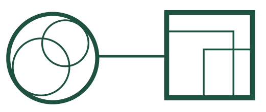
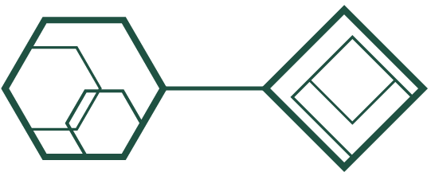
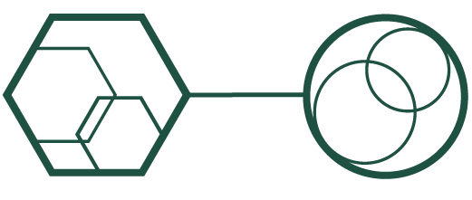
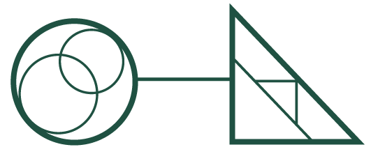
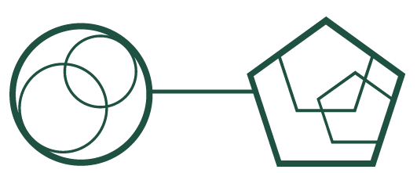

Da sala vazia ao primeiro dia de aula
Do primeiro contato com o Moodle do Ifes à abertura da sala: criar a sala, definir datas, organizar seções e rodar o checklist de abertura.
Avaliação online de ponta a ponta
Estruture a avaliação no Moodle: da prova online à proteção de acesso, passando por questionários e banco de questões.
Do Livro de Notas ao Sistema Acadêmico
Do Livro de Notas ao fechamento: configurar, calcular médias com recuperação e exportar notas para o Sistema Acadêmico.

Conteúdo interativo com H5P, do básico ao avançado
Do potencial do H5P à montagem de um conteúdo interativo na sala virtual, passo a passo no AVA.

Aulas ao vivo por Webconferência
Prepare, conduza e transmita uma aula ao vivo: da webconferência integrada ao Moodle à transmissão no YouTube.
Acompanhamento e gamificação do progresso
Configure a conclusão de atividades, a barra de progresso e o LevelUp para acompanhar e engajar a turma.

Avaliação acessível para todos os estudantes
Cuidados de acessibilidade ao inserir recursos, tempo ampliado no questionário e audiodescrição em imagens.
Conteúdo em Libras no AVA, do vídeo ao termo técnico
Inserir vídeo em Libras no AVA, ativar a visualização VLibras e usar o videobook de termos da EaD em Libras.
Avaliações com IA generativa
Da Taxonomia de Bloom 2.0 à geração de questionários e rubricas com o GPT, aplicada à sala virtual.

Administração da sala virtual ao longo do curso
Backup e restauração, acesso de usuários e visitantes, e atividades com acesso restrito durante a oferta.
Nenhuma trilha nesta categoria.